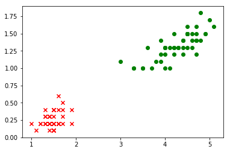
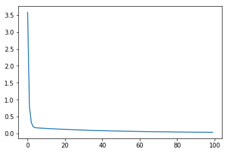
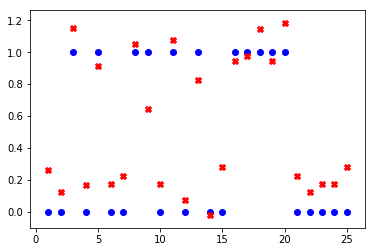

鸢尾花的二分类_v0.1
## 导包
import pandas as pd
import matplotlib.pyplot as plt
import numpy as np
import tensorflow as tf
from tensorflow.keras import layers
from sklearn.model_selection import train_test_split
1. 提出问题
根据处理好的数据集iris_bi.data.csv,进行两种鸢尾花setosa和versicolor的分类。
2.导入新的数据集
datasets_path = 'data/iris_bi.data.csv'
iris = pd.read_csv(datasets_path,header=None)
print(iris.sample(5))
0 1 2
35 1.2 0.2 0
60 3.5 1.0 1
71 4.0 1.3 1
16 1.3 0.4 0
56 4.7 1.6 1
# 转换为np.array
iris = np.array(iris)
print(type(iris))
print(iris.shape)
<class 'numpy.ndarray'>
(100, 3)
# 可视化
plt.scatter(iris[:49,0],iris[:49,1],marker='x',c='red')
plt.scatter(iris[50:99,0],iris[50:99,1],marker='o',c='green')
<matplotlib.collections.PathCollection at 0x1343839b0>

# 拆分特征和标签
iris_X = iris[:,0:2]
iris_y = iris[:,-1]
print("特征集的形状：" + str(iris_X.shape))
print("标签集的形状：" + str(iris_y.shape))
特征集的形状：(100, 2)
标签集的形状：(100,)
# 拆分训练集和测试集
X_train,X_test,y_train,y_test = train_test_split(iris_X,iris_y,test_size=0.25)
print("训练特征集的形状：" + str(X_train.shape))
print("训练标签集的形状：" + str(y_train.shape))
print("测试特征集的形状：" + str(X_test.shape))
print("测试标签集的形状：" + str(y_test.shape))
训练特征集的形状：(75, 2)
训练标签集的形状：(75,)
测试特征集的形状：(25, 2)
测试标签集的形状：(25,)
2.训练模型
# 搭建模型
model = tf.keras.Sequential()
model.add(tf.keras.layers.Dense(units=1, input_dim=2))
model.summary() # 查看模型结构
_________________________________________________________________
Layer (type) Output Shape Param #
=================================================================
dense_1 (Dense) (None, 1) 3
=================================================================
Total params: 3
Trainable params: 3
Non-trainable params: 0
_________________________________________________________________
# 编译模型
model.compile(optimizer='sgd', loss='mse')
# 训练模型
history = model.fit(X_train, y_train,epochs=100)
Epoch 1/100
75/75 [==============================] - 0s 2ms/step - loss: 3.5816
Epoch 2/100
75/75 [==============================] - 0s 126us/step - loss: 0.7773
Epoch 3/100
75/75 [==============================] - 0s 243us/step - loss: 0.3197
Epoch 4/100
75/75 [==============================] - 0s 238us/step - loss: 0.2034
Epoch 5/100
75/75 [==============================] - 0s 294us/step - loss: 0.1746
Epoch 6/100
75/75 [==============================] - 0s 176us/step - loss: 0.1686
Epoch 7/100
75/75 [==============================] - 0s 212us/step - loss: 0.1647
Epoch 8/100
75/75 [==============================] - 0s 206us/step - loss: 0.1609
Epoch 9/100
75/75 [==============================] - 0s 241us/step - loss: 0.1572
Epoch 10/100
75/75 [==============================] - 0s 170us/step - loss: 0.1543
Epoch 11/100
75/75 [==============================] - 0s 287us/step - loss: 0.1508
Epoch 12/100
75/75 [==============================] - 0s 358us/step - loss: 0.1474
Epoch 13/100
75/75 [==============================] - 0s 220us/step - loss: 0.1446
Epoch 14/100
75/75 [==============================] - 0s 201us/step - loss: 0.1428
Epoch 15/100
75/75 [==============================] - 0s 127us/step - loss: 0.1386
Epoch 16/100
75/75 [==============================] - 0s 125us/step - loss: 0.1359
Epoch 17/100
75/75 [==============================] - 0s 137us/step - loss: 0.1334
Epoch 18/100
75/75 [==============================] - 0s 105us/step - loss: 0.1309
Epoch 19/100
75/75 [==============================] - 0s 90us/step - loss: 0.1284
Epoch 20/100
75/75 [==============================] - 0s 131us/step - loss: 0.1264
Epoch 21/100
75/75 [==============================] - 0s 142us/step - loss: 0.1236
Epoch 22/100
75/75 [==============================] - 0s 163us/step - loss: 0.1208
Epoch 23/100
75/75 [==============================] - 0s 103us/step - loss: 0.1184
Epoch 24/100
75/75 [==============================] - 0s 193us/step - loss: 0.1164
Epoch 25/100
75/75 [==============================] - 0s 136us/step - loss: 0.1138
Epoch 26/100
75/75 [==============================] - 0s 181us/step - loss: 0.1119
Epoch 27/100
75/75 [==============================] - 0s 151us/step - loss: 0.1109
Epoch 28/100
75/75 [==============================] - 0s 112us/step - loss: 0.1079
Epoch 29/100
75/75 [==============================] - 0s 117us/step - loss: 0.1060
Epoch 30/100
75/75 [==============================] - 0s 81us/step - loss: 0.1037
Epoch 31/100
75/75 [==============================] - 0s 223us/step - loss: 0.1015
Epoch 32/100
75/75 [==============================] - 0s 109us/step - loss: 0.0999
Epoch 33/100
75/75 [==============================] - 0s 96us/step - loss: 0.0980
Epoch 34/100
75/75 [==============================] - 0s 158us/step - loss: 0.0961
Epoch 35/100
75/75 [==============================] - 0s 155us/step - loss: 0.0942
Epoch 36/100
75/75 [==============================] - 0s 102us/step - loss: 0.0927
Epoch 37/100
75/75 [==============================] - 0s 144us/step - loss: 0.0909
Epoch 38/100
75/75 [==============================] - 0s 96us/step - loss: 0.0893
Epoch 39/100
75/75 [==============================] - 0s 131us/step - loss: 0.0882
Epoch 40/100
75/75 [==============================] - 0s 120us/step - loss: 0.0866
Epoch 41/100
75/75 [==============================] - 0s 156us/step - loss: 0.0849
Epoch 42/100
75/75 [==============================] - 0s 95us/step - loss: 0.0834
Epoch 43/100
75/75 [==============================] - 0s 146us/step - loss: 0.0824
Epoch 44/100
75/75 [==============================] - 0s 172us/step - loss: 0.0807
Epoch 45/100
75/75 [==============================] - 0s 78us/step - loss: 0.0792
Epoch 46/100
75/75 [==============================] - 0s 118us/step - loss: 0.0777
Epoch 47/100
75/75 [==============================] - 0s 166us/step - loss: 0.0769
Epoch 48/100
75/75 [==============================] - 0s 115us/step - loss: 0.0757
Epoch 49/100
75/75 [==============================] - 0s 177us/step - loss: 0.0753
Epoch 50/100
75/75 [==============================] - 0s 138us/step - loss: 0.0744
Epoch 51/100
75/75 [==============================] - 0s 183us/step - loss: 0.0721
Epoch 52/100
75/75 [==============================] - 0s 132us/step - loss: 0.0710
Epoch 53/100
75/75 [==============================] - 0s 110us/step - loss: 0.0699
Epoch 54/100
75/75 [==============================] - 0s 177us/step - loss: 0.0682
Epoch 55/100
75/75 [==============================] - 0s 165us/step - loss: 0.0672
Epoch 56/100
75/75 [==============================] - 0s 92us/step - loss: 0.0662
Epoch 57/100
75/75 [==============================] - 0s 190us/step - loss: 0.0647
Epoch 58/100
75/75 [==============================] - 0s 116us/step - loss: 0.0637
Epoch 59/100
75/75 [==============================] - 0s 128us/step - loss: 0.0630
Epoch 60/100
75/75 [==============================] - 0s 101us/step - loss: 0.0620
Epoch 61/100
75/75 [==============================] - 0s 100us/step - loss: 0.0610
Epoch 62/100
75/75 [==============================] - 0s 80us/step - loss: 0.0602
Epoch 63/100
75/75 [==============================] - 0s 98us/step - loss: 0.0594
Epoch 64/100
75/75 [==============================] - 0s 162us/step - loss: 0.0587
Epoch 65/100
75/75 [==============================] - 0s 118us/step - loss: 0.0574
Epoch 66/100
75/75 [==============================] - 0s 88us/step - loss: 0.0565
Epoch 67/100
75/75 [==============================] - 0s 135us/step - loss: 0.0557
Epoch 68/100
75/75 [==============================] - 0s 114us/step - loss: 0.0548
Epoch 69/100
75/75 [==============================] - 0s 108us/step - loss: 0.0540
Epoch 70/100
75/75 [==============================] - 0s 154us/step - loss: 0.0533
Epoch 71/100
75/75 [==============================] - 0s 116us/step - loss: 0.0525
Epoch 72/100
75/75 [==============================] - 0s 143us/step - loss: 0.0516
Epoch 73/100
75/75 [==============================] - 0s 130us/step - loss: 0.0508
Epoch 74/100
75/75 [==============================] - 0s 132us/step - loss: 0.0501
Epoch 75/100
75/75 [==============================] - 0s 240us/step - loss: 0.0493
Epoch 76/100
75/75 [==============================] - 0s 136us/step - loss: 0.0486
Epoch 77/100
75/75 [==============================] - 0s 92us/step - loss: 0.0480
Epoch 78/100
75/75 [==============================] - 0s 83us/step - loss: 0.0474
Epoch 79/100
75/75 [==============================] - 0s 109us/step - loss: 0.0469
Epoch 80/100
75/75 [==============================] - 0s 150us/step - loss: 0.0460
Epoch 81/100
75/75 [==============================] - 0s 88us/step - loss: 0.0455
Epoch 82/100
75/75 [==============================] - 0s 141us/step - loss: 0.0449
Epoch 83/100
75/75 [==============================] - 0s 126us/step - loss: 0.0446
Epoch 84/100
75/75 [==============================] - 0s 100us/step - loss: 0.0440
Epoch 85/100
75/75 [==============================] - 0s 93us/step - loss: 0.0432
Epoch 86/100
75/75 [==============================] - 0s 110us/step - loss: 0.0428
Epoch 87/100
75/75 [==============================] - 0s 127us/step - loss: 0.0420
Epoch 88/100
75/75 [==============================] - 0s 123us/step - loss: 0.0416
Epoch 89/100
75/75 [==============================] - 0s 72us/step - loss: 0.0413
Epoch 90/100
75/75 [==============================] - 0s 71us/step - loss: 0.0407
Epoch 91/100
75/75 [==============================] - 0s 116us/step - loss: 0.0402
Epoch 92/100
75/75 [==============================] - 0s 111us/step - loss: 0.0397
Epoch 93/100
75/75 [==============================] - 0s 90us/step - loss: 0.0393
Epoch 94/100
75/75 [==============================] - 0s 75us/step - loss: 0.0390
Epoch 95/100
75/75 [==============================] - 0s 150us/step - loss: 0.0385
Epoch 96/100
75/75 [==============================] - 0s 108us/step - loss: 0.0381
Epoch 97/100
75/75 [==============================] - 0s 53us/step - loss: 0.0376
Epoch 98/100
75/75 [==============================] - 0s 138us/step - loss: 0.0372
Epoch 99/100
75/75 [==============================] - 0s 120us/step - loss: 0.0370
Epoch 100/100
75/75 [==============================] - 0s 111us/step - loss: 0.0366
3.评估模型
# 输出loss函数的变化
plt.plot(history.history['loss'])
[<matplotlib.lines.Line2D at 0x134d9d6a0>]

# 在测试集上loss函数的值
model.evaluate(X_test,y_test)
25/25 [==============================] - 0s 3ms/step
0.030918527394533157
4.使用模型
# 在测试集上进行预测
print("=====真实结果=====")
print(y_test)
print("=====预测结果=====")
predict = model.predict(X_test.reshape(-1,2))
print(predict.reshape(1,-1))
=====真实结果=====
[0. 0. 1. 0. 1. 0. 0. 1. 1. 0. 1. 0. 1. 0. 0. 1. 1. 1. 1. 1. 0. 0. 0. 0.
0.]
=====预测结果=====
[[ 0.26433852 0.12519976 1.1531546 0.16561392 0.9152911 0.17456213
0.22392443 1.0544298 0.645962 0.17456213 1.0769477 0.07583749
0.8255148 -0.02288714 0.28223488 0.9467571 0.9736016 1.1442063
0.9467571 1.1846204 0.22392443 0.12519976 0.17456213 0.17456213
0.28223488]]
# 可视化预测结果
x=np.arange(1,26)
#print(model.predict(X_test.reshape(25,2)))
plt.scatter(x,y_test,marker='o',c='blue')
plt.scatter(x,predict,marker='X',c='red')
<matplotlib.collections.PathCollection at 0x1348b55f8>

# 使用真实的样本进行预测
target = model.predict(np.array([[6.5,3.9]]))[0][0]
print(target)
0.5345514